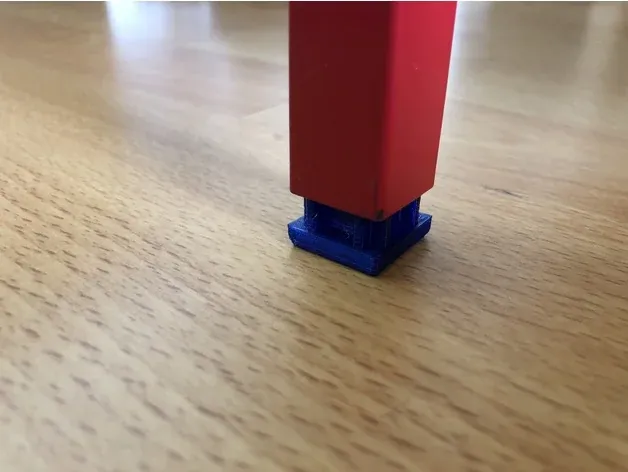
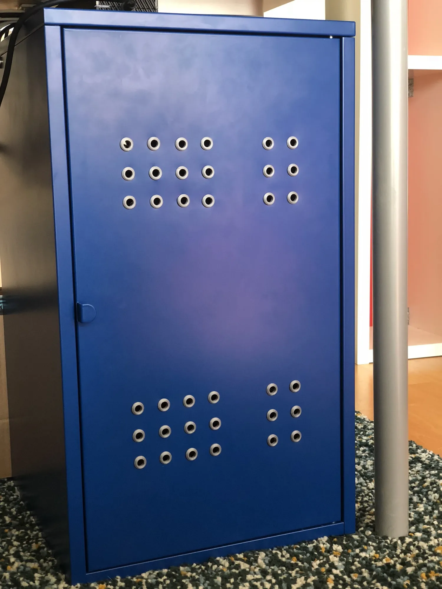
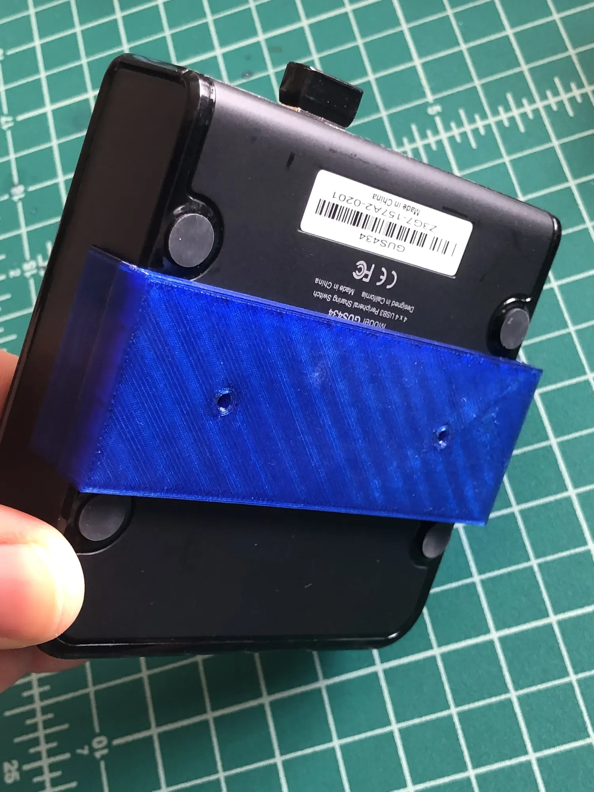
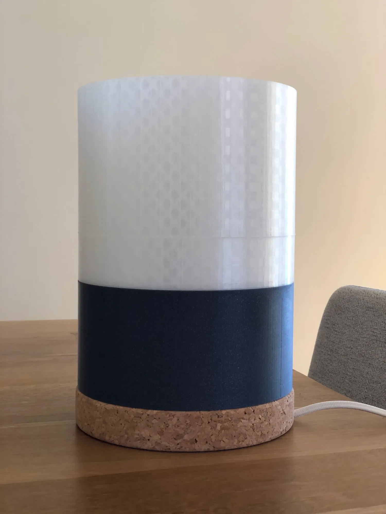

Recent 3D Designs Posted to Thingiverse
In May of 2018, my wife, dog and I moved to Los Angeles from New York City. In the process, I purchased new furniture for my home office. Almost all the furniture in my home comes from IKEA because I’m a big fan of the hackability of their products.
Around the same time as I received my furniture I had also gotten a new 3D printer — a Prusa MK3 — and put it immediately to use.
What follows is a collection of my recent 3D designs which, except for one, have to do with altering, improving or repairing an IKEA product. They are all available on Thingiverse.
IKEA Veberod Shelf and Drawer Clips:
I own a pair of IKEA Veberöd (Veberod) shelves, which I really like. The frames are made out of steel square tubing and the shelves and drawers are made of finished plywood.
My only complaint about the shelves is that they don't have stops for the drawers. They ride on steel runners which are open on both ends. Unless I carefully positioned each drawer, they didn't sit flush with the frame which really caused my OCD to flare up.
The clips in this Thing attach to the steel frame behind every drawer and provide a satisfying stop by way of little protrusions or wings, keeping all the drawers aligned and allowing me to sleep at night.
 View full-size image
View full-size imageIKEA PS Metal Cabinet replacement foot insert:
When I moved, one of the pieces of furniture I brought with me was an IKEA PS metal cabinet.
During the move, some of the plastic foot inserts at the tip of the legs had gotten lost or damaged, so I designed a new one and printed 4 out in blue PETG.


View full-size imageIKEA Lixhult Air Hole Grommets:
I bought a Lixhult metal cabinet from IKEA and wanted to place backup hard drives inside the cabinet. In order to ensure proper cooling of the drives, I needed to make some air holes in the front of the cabinet. These air hole grommets fit over the holes I made in the cabinet sheet metal, allow airflow, but hide the sharp edges around the holes.


View full-size imageThis is a simple wall mount for an IOGear USB Switch (Model GUS434). It has screw holes for flush-mounting the USB switch to a flat surface like a wall. I used double-sided tape to attach it to the wall behind my desk.


View full-size imageIKEA Sinnerling Lamp shade replacement:
This is a replacement shade in two parts for IKEA's Sinnerling lamp. The lamps have a cork base with a large, fairly heavy, frosted glass shade that sits over the cork base.
I bought 2 Sinnerling lamps from Ikea and had them delivered to my house. Unfortunately, I had a lot of problems receiving the lamps unbroken. I tried ordering the lamps several times, but was only successful in receiving one unbroken lamp. IKEA was very good about getting me refunds and re-ordering the lamps. On the final delivery attempt, I received one good lamp and one broken lamp. Since the base and electrical wiring of the lamp was fine, I carefully brushed off the broken glass, kept it and designed this Thing as a replacement shade. The last picture is of an undamaged, original IKEA Sinnerling lamp showing its glass shade.


View full-size image